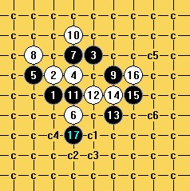
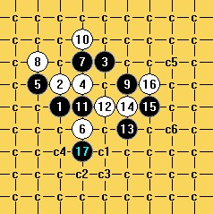

[互动棋谱]疏星终结
#1 [互动棋谱]疏星终结 作者：二十七刀 发表时间：2009-3-9 18:40:24
27垃圾谱部分增补 疏星终结.rar
下载

疏星终结.rar
下载

［ 茗弈小刀 于 2009-3-9 19:13:46 时奖励此帖[金币加 20 威望加1］
［本站用户 茗弈小刀 于 2009-3-9 19:13:59 花5个金币送您鲜花一朵］
［本站用户 茗弈小刀 于 2009-3-9 19:15:21 花5个金币送您鲜花一朵］
［本站用户 茗弈小刀 于 2009-3-9 19:15:39 花5个金币送您鲜花一朵］
［本站用户 闫荣辉 于 2009-3-9 19:24:49 花5个金币送您鲜花一朵］
［本站用户 逆刃 于 2009-3-9 20:04:52 花5个金币送您鲜花一朵］
［本站用户 海湾浪琴 于 2009-3-9 20:27:21 花5个金币送您鲜花一朵］
［本站用户 五子痴 于 2009-3-10 8:59:00 花5个金币送您鲜花一朵］
［本站用户 快乐至上 于 2009-3-10 9:05:24 花5个金币送您鲜花一朵］
［本站用户 红舞鞋 于 2009-3-20 14:41:15 花5个金币送您鲜花一朵］
［此帖子已被 茗弈小刀 在 2009-4-22 19:35:36 编辑过］
#2 Re:疏星终结 作者：越狱行辕 发表时间：2009-3-9 19:01:29
强悍这都终结#3 Re:疏星终结 作者：刀魂 发表时间：2009-3-9 19:06:36
厉害。是小刀 终极的吧 佩服 佩服#4 Re:疏星终结 作者：茗弈小刀 发表时间：2009-3-9 19:14:57
是哥哥的劳动！#5 Re:疏星终结 作者：闫荣辉 发表时间：2009-3-9 19:23:17
强，这个我好像昨天还下到啦！哈哈哈……迟发一天好哈！
#6 Re:疏星终结 作者：安娜制作所 发表时间：2009-3-10 15:11:00
支持下,
［ 茗弈小刀 于 2009-3-10 19:39:24 时奖励此帖[金币加 20 威望加1］
［本站用户 琦玉 于 2009-3-11 10:21:36 花5个金币送您鲜花一朵］
#7 Re:疏星终结 作者：山寨手机 发表时间：2009-3-10 16:14:48
好帖子，就要顶起来［ 茗弈小刀 于 2009-3-10 19:39:42 时奖励此帖[金币加 20 威望加1］
#8 Re:疏星终结 作者：茗奕的飞猪 发表时间：2009-3-10 19:38:32
顶起！！！！！！！！！！！！谢谢！！！！！！！！！！！
#9 Re:疏星终结 作者：剑魔令狐冲 发表时间：2009-3-11 2:08:04
是不错 但是那个10手不强 如果十手放在I8黑棋必挡J7然后12手I11 该怎么办？
#10 Re:疏星终结 作者：五子痴 发表时间：2009-3-11 9:41:40
=======上图对应的爱五子棋谱代码如下，以便你拆解：========
h8h9j10i9g9i7i10g10k9i8j7i11k10l10k8i6i5k7l9j8h10
======================================================
楼上说的是这个12的变化吧 21之后 面对黑潮涌般的进攻 白难以招架！
［本站用户 琦玉 于 2009-3-11 10:20:56 花5个金币送您鲜花一朵］
#11 Re:疏星终结 作者：刀魂 发表时间：2009-3-11 9:50:49
顶一个！！！！#12 Re:疏星终结 作者：剑魔令狐冲 发表时间：2009-3-11 10:32:16
潮涌般的 难以招架
难以招架  这两个词确实 体现了楼上的文采 也谢谢你给出这么一个变化来 不过 棋下到这 局面还是大体上平衡的吧 如果你发了这个变化的终结谱出来分享 我就真的佩服你
这两个词确实 体现了楼上的文采 也谢谢你给出这么一个变化来 不过 棋下到这 局面还是大体上平衡的吧 如果你发了这个变化的终结谱出来分享 我就真的佩服你
#13 Re:疏星终结 作者：冷面孤煞 发表时间：2009-3-11 15:32:18
好东西，顶起来，欧也
#14 Re:疏星终结 作者：红豆 发表时间：2009-3-11 20:31:16
我再顶
#15 Re:疏星终结 作者：wrwak 发表时间：2009-3-11 22:30:18
=======上图对应的爱五子棋谱代码如下，以便你拆解：========
h8h9j10i9g9i7i10g10k9i11i8j8k7h11g11i12j13j12
======================================================
这个15没有下文
这样怎么杀
=======上图对应的爱五子棋谱代码如下，以便你拆解：========
h8h9j10i9g9i7i10g10k9i11i8j8k7h11g11i12j13j12k12l11l8m9
======================================================
这样不久牵制了这个21
#16 Re:疏星终结 作者：茗弈小刀 发表时间：2009-3-12 19:38:54
这个14应该比较难杀，希望大家共同参与一起完成这个谱吧。
#17 Re:疏星终结 作者：海湾浪琴 发表时间：2009-3-12 19:42:02
如果15往左边再跳一手F11呢？应该优于G11这个点吧？#18 Re:疏星终结 作者：明五 发表时间：2009-3-14 11:57:39
我是门外汉,特来学习。#19 Re:Re:疏星终结 作者：茗弈小刀 发表时间：2009-3-14 12:51:34
引用：去威望栏找有志哥申请个威望吧。你就可以发图什么的了。欢迎你以后常来本论坛交流。
原文由 明五 发表于 2009-3-14 11:57:39 :
我是门外汉,特来学习。
#20 Re:疏星终结 作者：香雪美景 发表时间：2009-3-15 14:48:49
师伯好厉害啊
#21 Re:疏星终结 作者：游戏人间 发表时间：2009-3-16 1:36:55
 才看到这帖子。这个13在03年就理论上白必胜的了
才看到这帖子。这个13在03年就理论上白必胜的了
#22 Re:疏星终结 作者：丑小鸭 发表时间：2009-3-16 11:12:26
啊，白必胜？
#23 Re:疏星终结 作者：四川连珠魂 发表时间：2009-3-17 19:51:38
终于大鱼说出真相了，错谱还讨论半天。#24 Re:疏星终结 作者：无聊 发表时间：2009-3-17 19:55:29
最近论坛人气是不错，不过浮夸之风渐盛
#25 Re:Re:疏星终结 作者：木木夕 发表时间：2009-3-17 21:22:59
引用：请大家看仔细，这里是在讨论交流。
原文由 茗弈小刀 发表于 2009-3-12 19:38:54 :这个14应该比较难杀，希望大家共同参与一起完成这个谱吧。
#26 Re:疏星终结 作者：木木夕 发表时间：2009-3-17 21:25:59
楼主提供的谱只是一个局面的杀，你有更好的你来！我看有的人是好处占尽了还说闲话挑毛病。#27 Re:疏星终结 作者：妙玉偷星 发表时间：2009-3-18 12:26:57
支持楼上的！#28 Re:疏星终结 作者：方圆之外 发表时间：2009-3-18 15:54:14
漂亮。。
#29 Re:疏星终结 作者：红舞鞋 发表时间：2009-3-20 14:41:06
真厉害啊！［本站用户 茗弈小刀 于 2009-3-20 17:46:55 花5个金币送您鲜花一朵］
#30 Re:[互动棋谱]疏星终结 作者：小帮帮 发表时间：2010-1-26 19:36:32
这个谱，未完成的部分很多，黑胜，白胜的结论是下不得的
=======上图对应的爱五子棋谱代码如下，以便你拆解：========
h8h9j10i9g9i7i10g10k9i11i8j8k7k8l8l9i6j6j5k4g6h7e7e8g5h11
======================================================
这个好难！